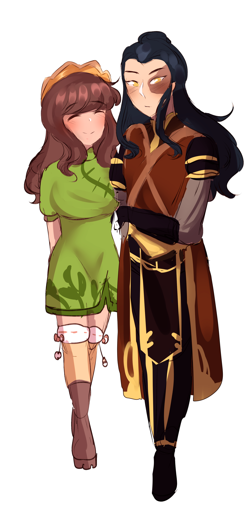

Ba Sing Se, that city could not be any bigger. That's what Chu Ju was thinking about going there. She had her passport ready and got in. She had to leave home, she was 17 years old and she was a subpar earthbender with a knack for anything that involves her hands and fabrics. She had made herself a little yellow, velvet crown like object, which she wore around her hair. She knew well enough that it was nonsense, but if anyone asked she'd simply show them how flexible and soft it was. It was only fabric. Her time in the train passed admiring the large city and enjoying the ride. Eventually she got out and walked away to find an inn to stay. She found one near the Pao Family Tea House. For a while Chu Ju looked out of the window. She noticed it was getting late, since the sun was setting, so she decided to call it a day and go to the bed of the inn. She looked out of the window till the sun eventually set and then her eyes closed.
~x~
The next day...
Chu Ju woke up and climbed down the stairs of her room. She noticed the owner, an old lady cleaning the floor slowly.
“Leave it to me.” she said politely.
“I own this inn for years, but, oh, I grew tired, my joints hurt, sometimes cleaning can be exhausting.” said the old lady and held the broom as a staff to rest her body for a while. “So your name is Chu Ju, right ?” asked the owner of the inn with a smile.
“Yes, ma'am.” replied Chu Ju.
“Would you like to work for me ? I don't really trust others cleaning the floor, since the last cleaner, many years ago, decided to turn the wooden floor into rock floor. I don't like earthbenders.” said the old lady with a frown.
“Well, you don't seem to dislike me.” said Chu Ju with a smirk.
“Oh, if you are an earthbender, I better leave cleaning to someone who isn't.” she said worried and in a slight shock.
“I'm in need of a work, how about I sew new curtains and bedsheets for your inn ?” said Chu Ju.
“Sounds like a deal.” said the owner. “The sewing machine is right over there. Please don't ruin my floor.” with that last comment, she walked to a closet, picked some fabrics and threads and handed them to Chu Ju, who got down to it.
A few days were spent with Chu Ju sewing and sleeping only. However, sometimes she'd use her money to go outside and eat. One day she just couldn't resist the sweet aroma of jasmine coming from the tea house, near the inn.
She entered bashfully, in her opinion the people inside would be very sophisticated to make that well-scented tea.
“Come in, come in. Don't be shy.” said Iroh in his apron. Chu Ju smiled and got in, closing the door behind her.
As she sat by a table she noticed Zuko serving tea to the customers, she really got attracted to his appearance, so she got closer to get to know more about him.
“Hey. I'm Chu Ju. Who might you be ?” she asked with a sweet grin.
“I'm Lee. I'm kinda busy now.” he said plainly and went behind the counter. Chu Ju sat close to the counter.
“Don't mind him. He's always hard-working like that. He takes honor in what he does.” said Iroh.
“That's wonderful actually. Not many people do what they do with honor.” However, little did Chu Ju know that was new to Zuko, since he just changed mentally. When Zuko heard Chu Ju praise him, he looked back at her with a heart-warming smile, which was rare for Zuko of the past.
“You have a beautiful smile. You should smile more often.” she said with a blush, even though she pretended to be confident. Zuko knew how to read her, she was a simple person. Zuko got immediately back to work though.
Chu Ju pleased with the results of her flirt headed back to the inn she was staying and fell asleep fast.
The days passed with Chu Ju visiting the tea house often. This night was similar.
“Good evening, Lee.” she greeted Zuko with a womanly wave of her hand.
“Good evening, Chu Ju.” he replied with a smile as he was wiping tea off a table. Iroh approached her.
“Today I made some chrysanthemum tea, why don't you try it over your usual jasmine tea ?” he asked.
“Sure, I'd love to.” she said and took a seat close to the counter as usual. After a while Iroh served her the tea hot as it was and in her opinion it smelled excellently. “Your uncle is really good at what he does...I mean...I don't mean you aren't good...I...” she said and wished she hadn't spoken.
“I don't make tea. I taste it, but I don't make it. I'm the waiter.” said the Zuko plainly and expressionlessly.
Chu Ju had a sip of her tea after it cooled. “Tastes great too.” she added.
“Thank you, you are a flower of the spring, a real ornament for any vase, by which I mean, a man's embrace. Am I not right, Lee ?” asked Iroh.
“Eh...yes, uncle.” said Zuko awkwardly. He wasn't used to flirting, unlike his uncle. In the meantime Chu Ju was enjoying her tea.
Time passed quietly with slight chat at times from Chu Ju to Zuko, sometimes he was smiling, sometimes he wasn't reacting and others he would simply seem stoic, Chu Ju didn't know, but he was recalling his pain, thinking that this was over, but all that had left their marks over him.
“Am I...?” asked Chu Ju.
“No, no. Some ghosts of the past. I have to clean your table.” said Zuko, who was caught off guard. Chu Ju got her cup in her hands and let Zuko wipe her table.
Suddenly there was a kick at the door and a gang of bandits broke in. Zuko glared at them.
“What do you want ?” he asked them or whoever one of them was in charge. They approached and Zuko got a pair of broadswords.
“Give us the till and it better be full, boy.” said their leader and slashed at Zuko's chest.
“Get out of here, Lee. I'll protect you.” said Chu Ju and jumped up. She rose a wall of rock from the ground to protect Zuko, but one of the bandits of the group was an archer and injured her. Another one of the group was about to use the ground to crash her to the ceiling, but Zuko threw the broadswords at his shoulders granting him incapable, then he pulled the broadswords out and he was ready to fight the other bandits as Chu Ju was on the floor in pain.
The one bandit attacked Zuko from afar with an arrow as another at the same time wanted to crash him between two stone plates he had earthbent. Zuko jumped up and avoided the stone plates and with a spiral move pierced the archer's heart. Then another bandit with a claymore nearly drove Zuko collide with the wall, but Zuko being agile, he crouched, then got up behind him and used his one broadsword to slay him.
Finally there was the earthbending bandit. Zuko went head first to attack him with rage burning for all the destruction in the shop. The bandit was raising the ground Zuko was stepping to crush him to the ceiling, but Zuko jumped down and pierced his stomach.
“You are safe now, uncle, Chu Ju, Pao.” said Zuko and they all appeared from where they were hiding.
“Thank you, Lee. You're very brave. Now if you don't mind me, I need to tend to my wounds...ack !” said Chu Ju with pain.
“Let me take you there.” offered Zuko and put his one shoulder under her arm.
“Oww, oww. It hurts. You're tall damn it.” said Chu Ju and thus Zuko carefully put his hands to the sides of her waist and when he felt he had a good hold of her, he took her to the inn, where the owner tend to her wounds.
After several days she visited Zuko's and Iroh's new apartment in the upper ring (with her passport). Zuko had given her the address one night he had visited her in the inn. Iroh opened the door.
“Good evening, Chu Ju. Is Lee you are looking for ?” asked Iroh with a smile.
“Eh, well if you wouldn't mind.” said Chu Ju bashfully. Zuko approached on his own though.
“Hey Chu Ju, come in.” he said with a smile and he offered his hand to her. She accepted shyly.
“So, what brings you here ?” asked Zuko.
“I just wanted to say something before I leave. I like you, ok ? I want you to know that.” said Chu Ju and gulped while looking at the floor with sadness.
“Where are you going ?” asked Zuko.
“To look for an earthbending master. I can't be that...that weak. Not being able to fight for myself. It's unacceptable.” said Chu Ju mad at herself. Then she looked in his eyes and continued. “I was always a weak earthbender, my mother had taught me a special move, it creates floor spikes, but I must fight my fear and use it more often than just in emergencies and actually after the events in Pao's shop, I didn't even use it there. To be honest it's very dangerous as these spikes can be very tall and impale people.” said Chu Ju deep in thought.
“I...I understand. I know someone afraid of his powers too.” said Zuko awkwardly. Obviously talking about himself, but Chu Ju didn't know that.
“Aww that's sad, Lee.” said Chu Ju. Zuko didn't reply. “Anyways, I'm heading to Taku to find a hermit earthbending master. Would you like to come with me ?” asked Chu Ju with hope.
“Things are looking up, uncle.” recalled Zuko and decided to share the good news with her.
“My uncle's tea house is opening soon, here on the upper ring and I will be working in it. You should stay and come have a cup.” said Zuko.
“I...I can't. Anyways, see you around. I'm sure we will meet again.” said Chu Ju and winked at Zuko with that she left.
~x~
When it finally was night...
“Uncle, I think I will sleep.” said Zuko, who messed his hair and laid on his bed softly.
“Good night prince Zuko. Pleasant dreams.” said Iroh and headed to his room.
After several hours of sleep Zuko had a nightmare. The day his father burnt his eye. He woke up covered in sweat.
“Thank you, Lee. You're very brave...” he recalled Chu Ju. Yes, that was one of the reason he liked that girl.
“That's wonderful actually. Not many people do what they do with honor.” that was another reason. Honor, even in such a humble job. Zuko smirked.
Then he recalled her wounded on the floor and his face got a serious expression again.
“I was always a weak earthbender...” he recalled Chu Ju say again.
With all these, Zuko rushed to his uncle and woke him up to tell him what troubled him.
“What is it Zuko ?” asked Iroh half-asleep.
“Uncle, Chu Ju might be in danger if I let her go to Taku alone. I need to follow her.” said Zuko to his uncle with worry in his voice.
“Love is like that...” was saying Iroh.
“I'm not in the mood for your nonsense.” said Zuko.
“Fine, find her. But do so in the morning. Get some sleep. Maybe around 6 o clock ?” suggested Iroh.
“Good idea.” said Zuko and went back to his bed and slept a couple of hours. Then he dressed up and headed to the inn with the monorail. The owner let him in and then he noticed Chu Ju climb down with her backpack.
“Lee ?” asked Chu Ju not believing her eyes.
“You are too weak, you need someone to protect you. I'll help you.” said Zuko grimly,
“Thanks for the compliment.” she said sarcastically, then added. “Thank you for coming. I appreciate it.” she said with a weak smile, she yawned and then she paid the owner of the inn, afterwards they left heading to Taku.
Zuko and Chu Ju were heading to Taku. The travel was long, but they didn't care, since no one was after them.
“So tell me, why didn't you get a master in Ba Sing Se ?” asked Zuko curiously.
“The inn takes all my money, I can't afford a master too and plus to pay the inn I have to work, so I only have time to sleep and eat.” said Chu Ju plainly looking at the sky, which was ready to rain.
“And flirt.” said Zuko.
“I'm so sorry, Lee.” said Chu Ju and looked at her boots as she was walking.
“Don't feel like that. It's a nice feeling. It's just...odd for me. No one really appreciated me, but what attracted my attention to you was that you were brave besides your weakness.” he said and thought he also liked that she had complimented his sense of honor and had called him brave.
“Thank you, Lee. You are a way more honorable warrior than me. Me on the other hand.” said Chu Ju with a stoic smile.
“You will be good after the earthbending master trains you.” he said optimistically.
“Thank you, Lee. I appreciate it.” said Chu Ju with a smile.
Soon enough it started to hail.
“Quick, we need to hide somewhere.” said Chu Ju and noticed a cave. “Let's go in.” she added and ran towards it.
“Ok, I'm following you.” said Zuko plainly.
Chu Ju in the cave was shivering.
“You are shaking.” said Zuko worried.
“Yes, the ground is very cold, so are the walls of the cave. I wish we could make some fire.” wished Chu Ju.
“I'll go get some wood and make some fire.” said Zuko and Chu Ju offered her double sash for him to wrap around his head as the hail turned soon to rain.
“Th...thanks. I appreciate this, Chu Ju.” he said slightly shocked. He hadn't felt anyone's love, asides from his mother's and uncle's and then he felt nostalgia for his mother. He sulked and left.
“Was it something I said ?” asked Chu Ju.
“No...it's a deep wound of the past.” said Zuko and left. Chu Ju looked at him leaving saddened.
“Back.” said Zuko after a long while. He noticed Chu Ju had hugged her knees and was rocking back and forth. “Are you ok ?” asked Zuko.
“V-v-v-very cold.” she stuttered.
“Well, I brought the wood.” said Zuko and sat next to her after putting the woods in a nice pile.
“N-n-nice.”
“You don't talk much, when you are cold. Well, anyways, close your eyes. The fire of our kiss will spark the wood. Magic. Let's try.” said Zuko with an awkward grin.
“It's too early for that.” said Chu Ju bashfully and her cheeks turned red as she blushed.
“Oh ! Of course.” said Zuko plainly.
“Are you hiding something ?” asked Chu Ju curiously.
“You don't suspect me, do you ?” asked Zuko grimly already feeling that she would abandon him.
“No, don't be silly. Why would I suspect the man that defended me and wants to protect me. Don't be silly, Lee.” said Chu Ju with a sweet smile. Zuko smiled himself.
“Ack !” grunt Chu Ju.
“What's the matter ?” asked Zuko worried.
“You really need to start a fire somehow. It's my time of the month. I...ugh...I suffer from endometriosis and that causes me strong aches when it's my time of the month. I'm sorry Lee. I need warmth when I'm like that and I can't...aaaaah...at all.” said Chu Ju and looked at him saddened. He recalled that look on his mother's face.
“She always seemed so hurt somehow.” he recalled and frowned in anger.
“Who's she ?” asked Chu Ju.
“My mother.” he replied.
“Poor woman. Killed when you were in young age, I guess.” said Chu Ju and wiped a tear away. “What a sad story !” exclaimed Chu Ju with a quivering voice.
“Actually I don't know what happened to her.” said Zuko with a sigh.
“Aaah.”
“I will try to make you feel better.” said Zuko and rose her tunic over her belly area. He started massaging gently.
“Your hands...They are so warm.” said Chu Ju pleasantly surprised.
“I...I need to open up to you.” said Zuko and he instantly regretted it.
“What is it Lee ?” asked Chu Ju pleased by his massage. “Are you secretly a firebender ? I'd understand if they were abandoning Ozai in a high rate. That guy is awful. I hate the fire nation. I pity its citizens though.” said Chu Ju and moaned lightly at the warmth of his hands on her tummy.
“Ye...yeah. Me too. But no, what I wanted to tell you was....the reason I followed you was...the fact that you are so weak. It makes me want to care for you.” he said, something that was true and he didn't say just as an excuse.
“I...I feel the same for you Lee.” said Chu Ju and Zuko kissed her lips softly. “I loved that.” said Chu Ju excitedly.
“Then you shouldn't have told me it's too early.” said Zuko with a charming smile on his features.
“You are adorable when you smile. You should be doing it more often.” she said with a smile.
“Rest now. I will try to light the fire.” said Zuko and Chu Ju turned to the side. In the meantime, Zuko was pretending to be banging rocks together as most non-firebenders would do. Then he touched the wood and it immediately caught fire.
“Finally you made it.” said Chu Ju and turned to the direction of the fire. Zuko was looking at the fire while caressing Chu Ju's slim belly. She was inwardly wondering what he was thinking, but she didn't want to interrupt him, so she just closed her eyes to sleep and avoid any future pains.
~x~
The next day
“Good morning, Lee.” said Chu Ju and notice Zuko, who was stirring something over the fire. “What are you doing ?” she asked curiously, but in a pleasant way, since the smell was good.
“Tea, uncle taught me.” replied Zuko. “Are you feeling any better ?” he asked casually.
“No, the second day is my worst actually.” complained Chu Ju and placed her arms over her belly. Zuko smiled.
“It'd be a pleasure to make you feel better again.” said Zuko with the same smile.
Chu Ju closed her eyes and awaited for him to rub her slim belly with his warm hands. As soon as he started, she smiled.
“This feels so good.”
This went on for some while till Zuko got up. Chu Ju looked at the fire and realized he had to pick wood again, so she didn't react.
“Thank you. You are a wonderful man.” she replied to his pleasant actions. Zuko just smiled and left. Soon he returned with more wood and he placed two cups on the ground and poured in some tea.
“Smells good.” commented Chu Ju and sat up on her blanket. She sipped a few of her tea. “Mmm, it's good.” replied Chu Ju. Zuko looked at her in disbelief.
“Well, not as good as your uncle's but very good. Don't look at me like that.” said Chu Ju with a smile and sipped some more tea. Zuko didn't speak, he just took a sip of his tea.
“I enjoy the peace and quiet of the Earth Kingdom.” said Zuko with a blank stare.
“You mean, Ba Sing Se. You never when the Fire Nation could attack us, even here. As a matter of fact I hear marching. Could it be ?” asked Chu Ju.
“Probably yes. I would recognize that noise everywhere.” said Zuko and rushed outside.
Zuko looked to the west and noticed a small squad of fire nation troopers and an officer approaching. He quickly got his broadswords and charged at them. One of the soldiers counter attacked him with fire, while another used a spear. Zuko disarmed that one and dodged the fire of the other soldier. Another soldier used a fireball and Zuko's broadswords flew back by the sheer force of the fireball.
“Stay back. I got betrayed by my own sister, what makes you think I will return ? Just for once I want to live in peace ! Leave me alone !” he yelled with steam coming out of his hands. He eventually resulted in firebending. Chu Ju could see them fighting from the opening of the cave and Zuko's firebending seemed all to odd to her, but she didn't mind since he was defending her.
Zuko fired at them, injuring them. They fled.
“We are safe.” said Zuko and headed back in.
“You're powerful. I admire you.” said Chu Ju and grunt in pain.
“Ok, ok coming.” said Zuko with a weak smile and started rubbing her slim tummy again.
“So you are a firebender. You got betrayed too. Tried to rebel against the Fire Lord ?” asked Chu Ju admiringly.
“It's a long story.” sighed Zuko. “I'm not Lee. I'm the exiled prince Zuko, son of Fire Lord Ozai...” was saying Zuko, till Chu Ju interrupted him with hatred in her eyes.
“You horrible monster. You are the son of the man, who killed so many people because of an ideology. Shame on you ! Don't touch me !” said Chu Ju harshly. Zuko looked back at her lost, he thought he had found someone to share his pain with.
“You think I like being the son of that man ? Or the brother of Azula ? The answer is no. You think I agreed with what they were saying or planning ? Do you know how I got this scar ?” asked Zuko angrily.
“No...” stattered Chu Ju in fear.
“I disagreed with a plan to use as a “sacrifice” so to speak, a division. He asked I battle him in an agni kai. I begged for mercy and...and he defeated me, as a sign of defeat, tradition of any agni kai he had to burn me and thus; I got this scar. You think I liked that ?” asked Zuko with a glare. Chu Ju lowered her eyes to the ground.
“I'm sorry, prince Zuko. I feel sorry for you, really sorry. I wish life was easier on you.” replied Chu Ju with tears on her eyes when she heard his sad story.
“I don't seek anyone's pity. I only seek honor and for once in my life I sought peace.” said Zuko and left along with his items.
Chu Ju felt horrible with a knot in her stomach. She had really messed up. She closed her eyes and after two days she'd leave.
~x~
The two days passed and Chu Ju made her backpack. She looked around and noticed that the cave felt empty without him. She sighed and left. She had no hope with the notorious Zuko, so she just left heading to Taku alone.
The weather was finally pleasant the sun was shining, the flowers had blossomed and the sky had some few white, fluffy clouds. As she was walking she looked at the small frogs in the small streams. She inwardly was wondering how far from Taku she was.
“Traitor !” yelled someone, getting her out of her reverie. Chu Ju looked at them shocked.
“You are under arrest for joining the prince of the fire nation.” said another. Chu Ju easily noticed that before her were earth nation soldiers and quickly rose rocks and attempted to hit them, but she had few force and they didn't hurt them much except for few scratches. A third one caught her by surprise behind her with a broadsword very close to her neck.
“Put your hands back.” ordered one of them and he put cuffs on her. They put her on an ostrich and they led her to an earth kingdom outpost.
At the outpost Chu Ju could easily see a stone cage with Zuko in it.
“I know his real name now.” she thought lovingly seeing him again. Hope burnt in her veins. She was put in a metal cage opposite of him.
''Hello, prince Zuko.” said Chu Ju.
“You got yourself caught for me ? I had told you I don't want your sympathy. Leave me alone.” he told her.
“No, they caught me because apparently I'm a traitor to the earth kingdom and faithful to the fire prince. Little do they know, we mean no harm, right ?” said Chu Ju with a smile that Zuko noticed.
“How can you smile in such a situation ?” asked Zuko.
“I barely can, but you inspire me. It was great to spend so many days with you. The days in Ba Sing Se, half the way to Taku, the days in the cave.” said Chu Ju lovingly.
“Reach out for me.” said Zuko and let his one hand out of the cage. Chu Ju did that with tears in her eyes, she was moved by the way he said it. Eventually they held hands. She felt like that was their most intense moment.
Suddenly they noticed fires in the background. Men with spears gathered around them to make sure they wouldn't be freed by the mysterious intruder, who was defeating everyone easily, even the earthbenders. Sometimes his hands would generate thunders. He was on the chubby side. Zuko knew all to well, who it was.
A pillar of fire burnt the men with the spears and the man with the lowered strawhat approached and opened their cages. Chu Ju looked around and noticed that everyone was dead.
Thank you.” she whispered.
“Come out prince Zuko. They were planning to execute you. I must be gone now.” said the mysterious man and got back on his ostrich.
“Execute you ?” said Chu Ju shocked. Zuko nodded.
“We need to hurry to Taku and then....then find a place to stay. Probably the earth kingdom informed the fire kingdom and rubbed in their face the fact that they would kill me.” said Zuko to Chu Ju.
“How do you know that ?” asked Chu Ju. Zuko pointed at his uncle as the wind blew his hat away.
“That man; was a once famed general of the fire nation, then also branded as traitor.” said Zuko.
“The fire nation is cruel.” said Chu Ju.
“Indeed.” nodded Zuko.
“Anyways, we need to get our things and head to Taku.” with that they searched around and then after getting their items,they travelled to set course for Taku.
Zuko and Chu Ju were once again on their way to Taku. Chu Ju was filled with determination. Nothing would stop her now, especially with Zuko by her side. Zuko looked up dreading the weather. The clouds above the mountains close to them were grey and ready to rain. However, that didn't look odd to Chu Ju, since every time she was visiting mountains it was either raining or snowing.
“I hate this weather.” commented Zuko.
“Hmm ?” wondered Chu Ju.
“As a firebender...damn, I hate this feeling...you see, firebenders get their energy from the sun and well, these clouds...” he was saying.
“I'm sorry. I wish I could make you feel better.” said Chu Ju saddened. Knowing Zuko's true identity knew how spiteful and hot-headed he was and knew that such a person would hate feeling weak. That moment something clicked in her, how could Zuko become good and abandon chasing the Avatar ? It was a well-known fact, since he was 13 years old he had traveled most of the world in the search, including Harbor Town. However, Chu Ju hadn't come across Zuko back then, only Fire Nation troops the left empty handed. She decided not to ask him and bring back any bad memories, since often Zuko was wearing a stoic smile.
“It's ok, Chu Ju. We all have grey days in our lives. They just happen I guess.” he sighed. The two of them kept going all the way till they noticed a building. Chu Ju assumed that was the hermit master ran towards it like the wind through a bamboo forest. Athletic as she was, she kept her breathing steady, Zuko was right behind her.
“What ?” he asked.
“The hermit. He must live here, right ?” asked Chu Ju excited with a grin decorating her face.
“No, this is where the herbalist lives. Perhaps she can tells us where the hermit is.” suggested Zuko.
“Then what are we waiting for, let's go in.” said Chu Ju fascinated by the sheer thought of becoming as a powerful earthbender as her favorite; Blind Bandit.
Chu Ju passed the opened door and Zuko followed carefully. He didn't want to intimidate the old woman inside. She might still remembered him even with his new look.
“Miyuki; meal time.” called the old lady. The white, fluffy cat climbed off a tree and rubbed herself right onto Chu Ju's leather, brown boots.
The old lady looked up only to see Chu Ju and Zuko. She instantly recognized Zuko.
“You...” she took some steps back in shock.
“No of the two of us is here to harm you.” said Zuko to calm her down.
The herbalist still looked shocked.
“I've changed. I'm just a citizen now and I'm not even hostile anymore.” he said innocently.
“He really did. I'm just a girl from Harbor town and when I met him he was just a waiter in a tea house. He means what he says. He's honest.” said Chu Ju and then noticed that the cat, Miyuki, moved towards Zuko and rubbed at his own boots.
“I had a cat when I was a child. The best animals in the world.” pointed out Chu Ju.
“Well, if Miyuki trusts you, so do I. Come on in.” said the old lady and walked further in and put down Miyuki's bowl.
Chu Ju smiling, looked at Zuko, happy for their success to be finally accepted. Zuko gave her a half-smirk.
“So, how can I help ?” asked the herbalist.
“We seek the hermit earthbending master. Sadly I am not aware of his name, but I try to sharpen my earthbending...I'm bad at it and that's a shame.” mumbled Chu Ju.
“Oh, Yiki. He's at the nearby mountain. He lives in a cave. You can't miss him. Take a seat, would you like some tea perhaps ?” asked the herbalist.
“Well, um...” Chu Ju wanted to learn how to earthbend fast, but at the same time, he didn't want to make the herbalist suspicious. She looked at Zuko to show him that he had to take control of the situation.
“Yes, I would like some.” he said with a smile. “Chu Ju, what about you ?” he asked kindly.
“Well, yes, why not ?” she agreed.
The two of them sat there and had tea while they were chatting about nearly anything that would cross their minds.
Eventually it was afternoon and they had to leave.
“The weather is still bad.” complained Zuko.
“If you excuse us, we will head to master Yiki.” said Chu Ju with a light bow. Zuko waved and the two of them headed out. Zuko sighed.
“Ok, so here we go.” said Chu Ju and took a deep breath in. She ran downhills with Zuko looking from a distance shocked, wondering if she was crazy.
“Wait up !” he called and followed her.
Soon enough they were at the bottom were the river was and headed upwards to the other mountain to find master Yiki.
“The mountain is too uphill.” Zuko pointed out slightly angered with disappointment. He didn't come all this way with Chu Ju to leave.
“I'm not THAT weak.” said Chu Ju offended and made a platform of stone appear from the mountain. She climbed on that one, Zuko followed and then made another, and another....that kept going till they reached a tiny plateau.
“This cave. Could it be his ?” asked Chu Ju slightly tired, but not anywhere near giving up.
“Let's check.” Zuko urged her. Chu Ju led the way to the small cave.
The cave was surrounded the symbols of the earth kingdom and earthbending. Chu Ju was sure they had come to the right place. There were natural glowing crystals formations within the cave and a thick mist over the floor.
“I'm going in.” said Chu Ju to Zuko, but Zuko followed with fire on his hand. After looking around and seeing no one, she sighed. She really wanted to train, starting that day, but master Yiki was not there. She gave a glare at the cave walls and exited along with a Zuko.
“All mist and no suprise. This should be a new expression.” said Chu Ju losing her motivation.
“Think of it this way; this might be a test for their determination in learning. The guy is a hermit, he tries to make it harder to be found.” elaborated Zuko. Chu Ju smiled as an idea shone in her.
“Brilliant. That was brilliant. He might be hiding somewhere, but we will find him.” said Chu Ju full of renewed energy. She made a platform and jumped on it, Zuko followed cheerfully. Content with Chu Ju's own joy.
After a few meters Chu Ju and Zuko saw a man gathering herbs. He was bald and lithe with a thin mustache. He had just picked a herb and looked straight at Chu Ju.
“Are you master Yiki ?” asked Chu Ju out of breath.
“Yeah, what do you want of me ?” he retorted with a cross expression. Zuko was slightly concerned, but decided to do nothing. How bad would an earthbending master be ? There was no chance he would be like Ozai.
“I'm Chu Ju, from Harbor Town. I want you to train me, sir.” said Chu Ju with a smirk.
“Hmm, well, climbing all the way up here to find me and especially coming all the way here from Harbor Town...” was saying Yiki.
“Correction, we were in Ba Sing Se, she was looking for a master, but she decided to drag me all the way here instead.” he said with a soft smirk.
“Even better, there are plenty of masters there too, but you preferred the rough way. You sought me out.” he paused and chuckled. “Fine, because, us, the earthbenders are used in pain. The ground is no small business. It's heavy to move and always puts a strain to your muscles. You'll get used to it eventually. As my father was saying; pain is the weakness finding an outlet off your body.” said Yiki with pride and crossed his arms over his chest. Chu Ju applauded his “wisdom”.
“When do we start ?” asked Chu Ju excitedly.
“It's never too early.” said the master. Chu Ju hearing that readied herself for an attack. He without hesitation lifted a rock and threw it at her. She rose a column of rock to protect her. However, it broke into pieces. She was nothing compared to Yiki. He was a master after all.
“You really are weak. I think we need to start from the basics.” said Yiki worried and rubbed his chin.
The sun was still up, it must have been 2-3 o clock in the afternoon and there was plenty of light. Yiki, Zuko and Chu Ju were at the bottom of the canyon.
“Look at my motions carefully. Your stances are correct, but your motions are wrong and you need to concentrate harder. Put more will and actually try to hurt me. Here, I'll show you how.” said Yiki, who dropped into a fighting stance. Chu Ju copied that stance immediately. “Kick the ground to shake it and remove the rock, lift your fist to remove it. Do it.” he urged her.
Chu Ju did it at first, but just let the rock levitate.
“I told you to try to hurt me. Come on, attack me.” he urged her again.
Chu Ju attempted to, but the stone didn't even scratch him. He dodged it, because it had almost no force.
“Again !” he commanded.
~x~
Training was taking place everyday for many hours on end. For 2 weeks Chu Ju managed to become a fearless warrior.
Master Yiki was always mischievous, so, without Zuko the two of them would go and random high-ranking fire nation officers, like commanders and yes, Chu Ju managed to bring them down. However, she felt beyond guilty even though she always hated the fire nation for all its crimes.
Chu Ju and Zuko were over the opening of the cave sharing a dish of spring rolls. Chu Ju loved them and they had borrowed some soy sauce from the herbalist. She really got to like them both. Eventually Chu Ju spoke up.
“These hands are stained with blood and dirt.” she said casually. Zuko had a bite of a spring roll after dipping it in the sauce.
“What do you mean ?” he asked. His voice was a mix between care and seriousness.
“I have a confession to make. I find myself guilty of something.” she tried to prepare him for what was to come.
“What is it ?” he asked now his voice was just grim.
“I want you to know first and foremost, that I not proud of it and secondly, I would never harm you...but I killed...fire nation officials.” she finally mustered the courage to say.
“Good. I hate them. They were always treating me like a dog. Especially Azula.” he finished disgusted.
“Besides, I had told you I disliked the fire nation. I mean...you know...the destruction...and all. Sorry.” said Chu Ju to amend for the things she had said.
“Yes, I remember it.” he said coldly.
They stayed like that in silence till they noticed a fire nation hawk swoop by. Chu Ju trapped it within a stone cage (similar to Toph's tent). When she opened it carefully, Zuko captured the hawk skillfully and got the message, then he read it. He noticed that they knew they were seeking them out.
“We need to leave. They are looking for us.” said Zuko in a grim tone.
“Then let's leave, but let's tell Yiki and the herbalist first to be prepared.” suggested Chu Ju.
“They won't attack the herbalist. She's too weak to be hiding us. The fire nation is smart. Just tell Yiki.” ordered Zuko.
After doing just that the two of them left Taku and headed wherever destiny would take them.
Zuko and Chu Ju found their way away from Taku and into a tavern. The people in it seemed strange and not inspiring trust. Chu Ju was wary of them and looked at Zuko to see if he was sharing her bad feeling about the whole situation. It seemed that indeed Zuko was feeling the same. The two of them got seats at a corner table to attract as less looks as possible.
“Good idea to get some rest.” said Chu Ju with a weak smile. Zuko seemed to wary and didn't let his guard down. He was still scanning the area. “Maybe we should have disguised ourselves.” suggested Chu Ju, but of course they were already in the tavern and too late to get disguised.
A young waitress in a skimpy dress approached them. Chu Ju being of average looks with only a b cup seemed to envy the d cup girl with the cleavage showing and her showing average body as well. If Chu Ju could change color, she'd be green.
“What would you like ?” asked the young waitress. Chu Ju didn't speak, she just averted her eyes.
“A tea if possible ?” asked Zuko without being specific about his tea.
“Sure, handsome.” said the sexy waitress and then looked at Chu Ju. “And you, hun ?” she asked.
“Ugh...some tomato juice...no alcohol please.” she said and sighed again.
“Got it.” said the waitress and left after writing their orders on her notepad.
Zuko smirked and tipped Chu Ju's chin with his finger.
“You should not be jealous.” he said innocently. Chu Ju looked deep into his eyes mesmerized by his words. “You are charming and less of a tease and I appreciate that.” he said with a genuine smile. Chu Ju grinned.
“I wish I kiss you right now.” she said fascinated by the romantic situation unfolding between them in such a silly tavern. The two of them lifted a bit and bent slightly over the table to reach one another's mouths and they kissed. Nothing special just a peck, but to a romantic soul like Chu Ju it mattered.
Suddenly the door opened with a thud, the waitress arrived to Zuko's and Chu Ju's table with their orders and then looked at the door. A massive man entered. The people in the tavern started cheering. From all the cheering, Zuko and Chu Ju realized that the man's name was Xi and he was a bounty hunter.
The man scanned the area for any wanted people, he was a professional after all. He noticed Zuko staring at him. He approached him. Chu Ju was battle ready by clenching her fists and ready to earthbend or punch him as she had furrowed her brow. Zuko seemed to be calculating the Xi's moves. Soon enough some men rose.
“I'd recognize that scar everywhere, you fire nation scum.” spat Xi.
“You dare speak like that again and I will end you, right here and right now.” hissed Chu Ju threateningly.
“You won't like it when I hand you both to the earth kingdom.” said Xi with a sadistic smirk. “Traitor.” he spat to Chu Ju.
That was all Chu Ju needed. She picked a stone from the floor and threw it against the man. He skid across the floor. His henchmen ran towards Chu Ju with their fists in the air and some with clubs and other weapons, which meant Zuko had to resort to violence.
Chu Ju was punching some and earthbending. At some point she used a small radius floor spikes technique with large spikes that impaled some, which got her proud. On the other hand Zuko was firebending and several had to ran out of the tavern for dear life.
“You won't escape me that easily, scum.” said Xi and punched Zuko in his good eye and since the tavern had caught fire at some places. Chu Ju grabbed Zuko by the arm and ran out and away.
After a long distance, Zuko and Chu Ju could finally rest for a bit and catch a breath. Chu Ju looked at Zuko and gave him a tender kiss, which felt more like a sucking on his left cheek.
“What was that for ?” asked Zuko puzzled and slightly surprised.
“Sorry.” said Chu Ju. She paused and an uneventful minute passed. Sometimes I get hot-headed.
“It's ok. Happens to everyone.” said Zuko with a weak smile. Chu Ju rested her head on his shoulder for a bit, but she was still full of energy, so she removed it a bit later. She then could clearly hear the sound of running water.
“Can you hear this ?” she asked.
“Yeah. Where is that sound coming from ?” asked Zuko. Chu Ju got up and scanned the area. They were sitting right in front of a large tree, it seemed as if it needed eight people to surround it with open arms. She made a circle around it and noticed a large whole in the trunk.
“Seems to be coming from inside the tree. I'm going in.” said Chu Ju with that she slid down. It was just like a slide. She landed on moss covered ground and roots. Zuko stood up tiredly and followed. However, he was curious and followed as well. He slipped in and landed where Chu Ju had landed earlier. He noticed Chu Ju following the stream.
“Where are you going ?” asked Zuko.
“I'm following the stream. It may lead us somewhere good.” said Chu Ju grinning. Zuko had a fire ignited in his hand and could see her grin. He decided to follow her.
After what seemed like half a day, but without them realizing it, Chu Ju and Zuko found themselves swimming upwards to the surface of a pond. Chu Ju not used to swimming was gasping for air, her lungs weren't used to it. She was feeling weak inside the unstable water. Zuko looked around, it was night. The crescent moon was high on the midnight sky. They noticed some people surrounding the pond.
“Who are you ?” asked the leader and stroke his pure white beard.
“I'm Chu Ju. An earthbender from Harbor Town.” explained Chu Ju wary.
“I'm Lee.” Zuko used his fake name. For some reason the elder wasn't convinced, but he paid no mind, he was sure they meant no harm. “Who are you ?” asked Zuko.
“We are the Tian Qi. A tribe of earthbenders.” (tian qi means calm (adj) in chinese) welcome.
“What brings you here ?” asked a young man.
“We followed the stream to the source.” said Chu Ju. “Would you mind us staying with you for a bit ?” asked Chu Ju.
“You can stay of course and since I feel much tension in you...I shall train you. You will become more calm and use your powers wisely.” said the leader and stroke his beard again. Zuko smirked. He really wanted Chu Ju to be less hot-headed.
“Follow me. We will let you sleep in a hut. You will be safe.” said the leader again.
The entire village was neat and beautiful. It was made out of sturdy and tidy huts, with equal spaces between them like a small city. They had gardens with tulips and carnations along with daisies, but both Chu Ju and Zuko were very tired to pay any more attention to the beautiful village. As soon as they went in the cabin they got on their respective beds, kicked off their shoes and laid to sleep.
The next day...
Zuko had woken up and was outside it wasn't early, but he was seeing the clouds he heard someone dragging their feet across the floor and realized it was probably Chu Ju. He quickly cut a white daisy with yellow core and held it softly waiting for her arrival as he was relaxing under a small lemon tree in bloom.
“Zuko !” cheered Chu Ju seeing the dreamy image of her boyfriend under the bloomed lemon tree with the daisy. She laid by his side, but not under the tree, in such a way that she would have view to the sky.
“For you my little flower.” said Zuko lovingly to Chu Ju and offered her the daisy. Chu Ju inhaled deeply even though there was no particular scent. She thanked him and let the daisy on her tummy.
“What are you doing here ?” she asked smiling.
“Relaxing. I believe I deserve it.” he said calmly.
“Would you like to watch the clouds with me ?” asked Chu Ju. Zuko didn't reply. Chu Ju looked up. “Hey, that cloud looks like a dragon !” said Chu Ju excitedly recalling the dragons from the fairytale books her father had purchased her. Zuko just smiled.
“The elder; leader of the tribe approached the two and sat before them on the ground folding his legs. Zuko and Chu Ju sat up in respect and Chu Ju placed the daisy behind her ear.
“I need to talk to you. The spirits told me your name isn't Lee. I asked them because I had a vision that you will help the avatar when the time comes. Zuko was shocked and upset.
“That's not my destiny ! I make my own destiny !” he argued loudly as he was annoyed.
“I am aware, but there is good in you because of a certain reason. I know you are Prince Zuko. Your uncle will find you and talk to you about what I'm talking to you. There will come a time...soon, where you will change your mind.” said the old man. Then he focused on Chu Ju. “May the two of us start our training in calming your down ?” asked the leader.
“Sure.” said Chu Ju with respect for him and a smile. His calming voice was relaxing her. She was happy to get trained. “Don't worry, Zuko. All will be ok. Have faith.” she said and gave him a peck on the lips. She followed the elder as he stood up and Zuko just sat there and sighed at all what the elder had just said. He wasn't one to believe in those that see the future, but the spirits had told him so. What if that was just a scam ? He didn't know. He closed his eyes and let the sun shine on him through the leaves of the tree.
~x~
Chu Ju and the leader went close to the pond. The leader crossed his legs and and arms, which he hid into his long, large sleeves.
“Do the same, Chu Ju.” he said in a caring voice. Chu Ju nodded and followed suit. Of course without inserting her arms into sleeves, since she had none.
“Now focus in your inner self. Do that by focusing on your chi.” he said calmly.
It took her a long while, but eventually she achieved that state of meditation.
“Look inside you. What do you see ? Do you see anger building up fast ?” asked the elder.
Chu Ju was seeing exactly that. She was seeing people mocking Zuko and she was feeling the urge to earthbend them, punch them and kick them.
“Dismiss any violent thoughts. They are not the right think. They will only lead you to trouble and pain.” said the elder.
That training continued for various days and Chu Ju felt herself becoming a better person. She smiled and approached her, Zuko's and their assigned guardian's cabin to rest. The guardian was a female. That day she was wearing a sleevless top and Chu Ju recognized some tattoos that looked oddly similar to her mother's.
Days passed by and they eventually had to leave. With the patience training Chu Ju had become a better warrior, she fought some of the warriors of the village and she noticed that her blows were more focused and less random. She appreciated that deeply, she thanked the leader along with Zuko, then an old lady approached her.
“I noticed you were staring your guardian's tattoos and you have a striking resemblance to someone, who must probably be my age. Do you know someone named Miyin ?” asked the old woman. Chu Ju was shocked.
“Uh...uh...yeah, that's my grandma.” said Chu Ju shocked.
“I realized. She had the same sunkissed color as you and same dark brown eyes. When you see her again. Tell her Koaqa is sending her greetings.” said the old lady. Chu Ju smiled and hugged the old woman. Then she left and approached Zuko, who was talking to the leader.
“I still can't believe what you are telling me. I doubt I'll ever help the avatar. I no longer have something against him, but it's highly unlikely. Thank you though. Your hospitality is appreciated a lot.” said Zuko and bowed to greet the leader. So did Chu Ju and so the two of them got going to where the path of destiny would take them again.
Zuko and Chu Ju were traveling towards the south and particularly Kyoshi Island. Chu Ju explained Zuko, they'd have to find a way to go there and there was no port in the area.
“Don't bother that much. We will find a way. How bad can it be ?” he asked and recalled his time in the north pole. Of course Chu Ju knew nothing of it, she only noticed Zuko touch the bruise on his other eye. It was similar to the one he had back then on the north pole, but this one was earned in a bar fight. However, he smiled. Chu Ju was trained well and defended him just fine. Even though he asked her to not cause any trouble, even though that was what she was doing after finding her inner earthbender. She loved using her powers a lot. Zuko just let a sigh end his train of thought.
“What's the matter, my fire prince ?” asked Chu Ju, when she saw him stop.
“I remember this place. My uncle had been caught somewhere around here.” said Zuko and the memories came flooding at him.
“Bad memories ?” asked Chu Ju in a low voice, trying to avoid striking any heart strings.
“Old Zuko.” said Zuko with a sigh till he heard sounds and looked around carefully ready to fight.
“That's not fire nation, my fire prince.” said Chu Ju lovingly. “These are just hippogriffs. If we catch one, we might be able to travel to Kyoshi Island.
“What are hippogriffs ?” asked Zuko curiously.
“Large bird-like creatures with horse-like hind legs. Oh and long tails. They fly, so if we capture one we might be able to fly to Kyoshi island and escape the fire nation that is chasing us.” said Chu Ju with a smile full of joy.
“Why are you that happy ?” asked Zuko curiously.
“I'm just happy to be with you. That's what matters to me.” said Chu Ju and gave him a peck on the lips. He steadied her face kissed her back with intense passion, however, she didn't hold back, she put all her lust in that one kiss. The kiss became more intense as Zuko was groping her breasts over her clothes.
“No, no time for that we have to leave. The fire nation is after us.” said Zuko and coughed in his palm to calm down.
“Sorry. It's just...my fault. Please forgive me.” said Chu Ju with a deep bow.
“I forgive you anyways. You are my Chu Ju.” he said with a weak smile and looked back behind him to check if there were any troops around. “We must hurry.” he said and grabbed Chu Ju by the hand.
“Let's climb up this mountain. Hippogriffs are supposedly living on high altitudes. We might be able to catch one with enough skill. Two pairs of hands are better than one.” suggested Chu Ju. Zuko nodded.
Chu Ju was using her earthbending to make steps on the mountain, but unlike these back in Taku, these were sturdier and could hold them better. Once they were climbing one, Chu Ju would make one new and the previous would vanish. That continued till they reached the top. Zuko opened his mouth in awe.
“Look at these huge birds. They fly around the top like...” he was saying.
“Like guardians ? Yes, hippogriffs in the legends are the guardians of the mountains. Fantastic right ?” asked Chu Ju.
“Careful !” exclaimed Zuko as a fire nation hawk appeared. It wasn't a messenger hawk, Zuko realized that because when it opened its mouth it breathed fire and attempted to hurt the hippogriffs.
“They know our location.” said Zuko stressed with sweat on his forehead. Making his hair, which had grew longer, stick to it.
“You are surrounded.” exclaimed a man. Zuko could tell he was from the fire nation by his accent.
The hawk tried to attack the hippogriffs again. This time it was very close to actually harming one. Chu Ju rose a wall to protect it and Zuko attacked the hawk with fire. The hawk backed off and back to its owner, probably a general.
“This isn't the Combustion man's hawk, but whoever's it is, it very strong.” said Zuko.
“We are stronger.” said Chu Ju with a smile of pure joy. She was very happy she could use her powers for good especially in combination with Zuko.
Chu Ju lowered the wall and looked around only to see a hippogriff being lowered as if it wanted to take people on its back.
“I guess the legend also has it that the hippogriffs are also guardians of the earthbenders ?” asked Zuko with a grin.
“No, I just guess it helps us, because we saved it.” said Chu Ju.
“Do you think it would be wise to ride the hippogriff ?” asked Zuko. “Maybe it doesn't like firebenders and can recognize them.” he said.
“Well, we won't know until we try.” said Chu Ju with an innocent shrug. Zuko went ahead and rode the hippogriff.
“Fire at them ! They are escaping with the hippogriff !” heard Zuko and Chu Ju.
“This hippogriff better know how to dodge. There is no earth here to be bent.” said Zuko cynically.
“Have faith. The hippogriffs are smart birds.” said Chu Ju and noticed the hippogriff do several maneuvers. “See ? Survival instinct.” said Chu Ju with a smile. Zuko grinned with joy as they had finally escaped the fire nation, but that would probably be for a short while.
~x~
As the hippogriff was flying, Chu Ju was barely awake and watching were it was flying to. But she noticed that soon enough the hippogriff landed on the ground and she couldn't help, but hear Zuko.
“This is Kyoshi...” he said in a low voice. The night covered their moves and they would probably not notice them as Chu Ju took the hippogriff and and she along with Zuko tried to look for a place to stay.
“Do they know you here ?” asked Chu Ju.
“Maybe.” was the simple reply she got.
As they kept walking, she finally decided that since there were no other homes in the area to knock the door of one of them instead of sleeping in the street.
“You deserve the best, but *yawn* it's time to sleep.” said Chu Ju tiredly.
“For once in my life, right ? No, life isn't that easy.” said Zuko with a harsh expression on his face and touched the punch he had received. This time he wasn't pleased because Chu Ju learnt to earthbent properly, but mad because people were treating him like he was the worst man that existed. The door eventlually opened.
“Excuse me and sorry for begging, but may....” Chu Ju was saying.
“We are not begging...We just ask you...” Zuko was interrupted by Chu Ju.
“Kindly.”
“...That you let us sleep in your house ? We are being hunted by the fire nation.” said Zuko with a weak voice. That which belonged to a broken man. He recalled the time he was a beggar with his uncle and that wasn't a pleasant memory at all.
“Um...” said the woman that had opened the door.
“And please feed our hippogriff.” said Zuko with authority this time as if he had erased that memory temporarily from his mind.
“Hippogriff. Cheap trick. You think hippogriffs are special in Kyoshi island ? They are considered sacred and you captured it. Go away scum.” said the man that approached the woman in the door and slammed the door int their faces.
“Sorry.” said Chu Ju.
“Don't worry. We could use their stable.” said Zuko tiredly.
“Stay here, I will try another door.” said Chu Ju and left. Zuko fell fast asleep on the fresh hay and the hippogriff next to him.
After four houses, Chu Ju returned only to find Zuko asleep. She fell right next to him.
“Good night, fire prince.” said Chu Ju lovingly, a smile formed on Zuko's smile and with that Chu Ju closed her eyes and they both fell asleep.
~x~
Chu Ju felt getting dragged. She embrassed some hay, thinking it was her bed and she was tossed away.
“Get outta here !” said the man. Chu Ju woke up with a horrible headache. She was on all fours and saw the man try to lift Zuko.
“You as well, scum.” said the man, but Zuko grabbed his one hand before he could toss him away.
“I'm not a scum.” said Zuko through grit teeth. The temperature in Zuko's body increased. The man left in fear. Chu Ju got back in.
“What a horrible way to wake up. Now I have a headache, what about you ?” asked Chu Ju.
“I'm...I'm...I'm not ok. I'm tired of everyone calling me scum. I changed.” he said and he caressed his head. He wasn't shaving it anymore, he wasn't the old Zuko. “I'm tired, tired, sick and tired !” he exclaimed angrily. “In the bar, here. Everywhere.” he complained. Chu Ju was silent.
“If you want a shoulder to cry on, I'm right here, Zuko.” said Chu Ju lovingly.
“It's not your fault. I just want to be accepted, maybe not completely pleasantly, but not being sworn at.” said Zuko and laid back onto the pile of hay. Chu Ju approached him and caressed his exposed chest.
“I will be punching them from now on, if that pleases you, Zuko.” she said with sorrow.
“No, it's ok. I guess it's because of the things I've done, but still I changed.” said Zuko exasperated.
“I'll tell you something, but don't get mad at me.” Chu Ju warned him.
“What is it ?” asked Zuko in an obviously bad mood.
“Many people died in this war. It's not just you they hate, it's Ozai and your uncle and Zhao and whoever else is in this. They hate the fire nation in general. They hate the war, they hate all this dying. I hope this soothes your pain.” said Chu Ju making eye contact with Zuko.
“You're right.” he said and sulked.
“Come now, we have to find the governor and explain him.” said Chu Ju with a smile.
“Sure, I guess.” said Zuko and got up.
“Should we hide the hippogriff in your opinion ?” asked Chu Ju.
“I don't think so. Let them know, who we are. If they want us to leave, we leave.” said Zuko disappointed.
“I was just saying...about earlier.” said Chu Ju saddened.
“It's ok.” he said plainly.
Zuko and Chu Ju with the hippogriff by their side headed to the center of the village.
“Hey, all of you. Hey !” yelled Zuko.
“Come here people, we want you to come here.” was yelling Chu Ju.
The whole thing attracted the attention of some villagers, the governor and the Kyoshi warriors.
“What's the matter ?” asked Oyaji, the governor of the island.
“We caught a hippogriff, I'm an earthbender and he's a firebender...” was saying Chu Ju.
“I'm the exiled prince Zuko, son of Fire Lord Ozai, we seek asylum. I left all that behind...” Zuko was interrupted.
“We need your help. Please accept us. Zuko means no harm and I will try my best to protect the island.” said Chu Ju desperately. Oyaji was rubbing his beard nervously.
“Prince Zuko you say ? I knew you were exiled. What makes you more special now...asides from the new clothes and haircut ?” asked Oyaji.
“Azula, my sister...betrayed me and I walk around like a vagabond. I want...we want a place to hide and have shelter and in return we will protect you. I warn you we are being chased.” said Zuko.
“Capture them.” said Oyajin.
~x~
“I prefer the hay.” said Chu Ju plainly. Zuko had sulked. Chu Ju sat right next to him turned towards him, slipping the sleeve of her tunic lower.
“What are you doing ?” asked Zuko with a grin.
“I'm making you happy.” said Chu Ju.
“You sure are.” said Zuko and groped her again.
After some time...
Zuko was panting as Chu Ju was standing before him with her back on the cold wall. The heat of his body had made her sweat.
“The fire nation sure is hot.” said Chu Ju with a silly giggle.
“I want to ask you something.” said Zuko panting.
“I'm all ears.” she replied with a smile.
“Are you with me till the end ?” asked Zuko.
“You know that already. What a silly question.” said Chu Ju with a smile.
“Then after this, I want you to be my wife.” said Zuko. Chu Ju goggled her eyes in surprise and then she smiled.
“I will gladly be your wife. Let's fight this together.” said Chu Ju with a smile. “Kind of possessive. I'm not complaining though.” purred Chu Ju.
“Well, that's how you propose to a woman in the fire nation. The man must claim the woman he likes and then ask her to be the partner of his life.” Zuko said.
“Yeah, this tradition could turn bad really fast.” said Chu Ju cynically.
“Ok, I admit. I did it. It was fun, you have to admit that on your part.” said Zuko with a smile.
“Not only fun, but creative too. No one else came up with such a “tradition.”” said Chu Ju with a smirk.
“Yeah.” agreed Zuko.
“First time equals best time.” said Chu Ju joyfully.
“We should be doing that more often.” said Zuko with a smile and looked around.
That moment the governor came in with two bowls of food.
“Zuko, why didn't you attempt to melt the door and escape ?” asked the governor.
“I told you. We seek asylum. I believe this is the safest place to be in the whole village.”
“Make it more comfortable please. A bed would be appreciated and a table. Gods, I'm hungry, I have food right here and no place to eat it.” complained Chu Ju.
“Follow me.” said Oyajin. “From now on, you will be hiding in my house...refugee Zuko.”
The shifts in the tea shop Zuko and Chu Ju were working were crazy. The job was easy, but hectic. They had managed to get on a few dates and they had appreciated that deeply. They were getting closer and closer. Bonding together and the two of them loved one another's company a lot. Sometimes Zuko would get angry, but Chu Ju would calmy try to solve the problem or just wait for the “storm” to pass patiently. That was who she was around her loved one as long as he wasn't blaming her for anything she hadn't done. She knew when she was guilty and to take the blame for herself. She was a humble person besides her little velvet tiara-looking headband.
She sighed and served another round of teas at a small gang of men, who were roaring with laughter.
“Well, what are you doing after job ?” asked one of them.
“I'm tired, so I sleep.” she said and was about to leave with her empty tray. Someone else of the gang grabbed her hand.
“Sleeping is no fun. How about going out with us ? Hu likes you a lot and so do I.” said the young man.
“Sleeping is a lot of fun when you're tired. I have work to do if you don't mind me.” said Chu Ju and broke his hold over her. The men continued to laugh. Chu Ju furrowed her brow. She was annoyed beyond measure.
“You should put hot peppers in their tea.” said Zuko with a sadistic smirk.
“I'll get fired if I do that.” said Chu Ju with a sigh and headed to take another order. “Such scums in the tea shop we work. For shame !” sighed Chu Ju. Zuko looked at her as she marched away back into the kitchen were the tea was getting prepared the specialist. Zuko decided to approach the small gang of men and give them a piece of his mind. Nothing harsh, he would just tell them that Chu Ju was taken.
“Hey you. The girl you are flirting....well, she's not single. Just let her be.” said Zuko trying his best to remain calm and civilized.
“And just who the hell are you ? Her boyfriend ?” said Hu and laughed.
“As a matter of fact. I am. Now mind your own business.” spat Zuko with hatred.
That moment as one of the guys from the table rose. A figure entered the shop. He was tall and muscular. His features were rough and had a scar running from one side of his face to the other, as his face was unshaven. His arms were decorated by tribal tattoos and dragons. Chu Ju looked at him with fear.
“I'd suggest you leave Lee alone.” said the man. Zuko blinked. He didn't know the man defending him.
“I can take care of myself.” shouted Zuko angered.
“Yeah, he's right.” said Chu Ju and marched towards the man holding her empty tray like a shield.
“I mean you no harm. Your uncle sent me here. We need to talk.” said the tall man.
“Alright. I'll double my speed. Don't you worry babe.” said Chu Ju lovingly and placed her tray under her armpit carefully to form a heart with her hands.
Zuko blushed and gave her an awkward smile. “You are embarrassing me.” he whispered in her ear and left with the taller man.
The gang of men were impressed that Zuko, who in their opinion wasn't worthy enough to have Chu Ju, but if Chu Ju was allowed she'd tell these guys to get out of the shop immediately.
In the back room of the tea shop. Zuko and the man were sitting on some crates.
“My name is Xah. I come from Ba Sing Se. From the Fire Nation. Your uncle has been captured with the coup d'etat in Ba Sing Se. Azula rules the earth capital now and he sent me to give you this. I'm the only one he trusts.” said the man. He opened his bag and revealed a scroll. “This is for your eyes only.” said Xah and handed the scroll to Zuko.
Zuko couldn't believe his ears. He wasn't up to date with what was happening around the world. He hastily unrolled the scroll and read through it.
“What ?!” he exclaimed shocked, then he continued in a whisper. “I'm the great-grandson of avatar Roku ?” asked Zuko confused. Then he recalled what the leader of Tian Qi had told him that he'd help the avatar. “My mother was the granddaughter of avatar Roku ? That's crazy.” said Zuko. “I refuse to believe it.”
Xah got avatar Roku's headpiece from his leather bag. “Well, unfortunately that's the last thing that I have with me that your uncle gave me. It's avatar Roku's headpiece. All I know was that it was given to firelord Sozin at some point. Your uncle wants you to have it. Here, take good care of it.” said Xah.
When Zuko saw it he felt a wave of spiritual energy course though him, weak, but still he felt it. He touched it carefully to feel every part of it. Every detail of it was well-made. Zuko looked deep into the Xah's eyes.
“So what do I do now ?” asked Zuko confused.
“After an unsuccessful attack to the fire nation, the avatar and his friends went into hiding somewhere in the west. As for his allies, well, they were imprisoned.” said Xah.
“Alright. I'll see what I can do.” said Zuko with a smile and placed a sturdy hand on Xah's shoulder.
Zuko and Xah got up. Xah left after talking some few last things with Zuko and Zuko returned to Chu Ju.
“We have enough money to get going. We need to leave.” said Zuko. Chu Ju gave him the most surprised, shocked and puzzled looked of her life.
“What ?! Just as we have everything ahead of us. We've settled down now and you...forgive me. What's the plan ?” asked Chu Ju.
“I can't explain now. We'll get Hippolytus and fly to the west toward the fire nation.” he whispered into her ear.
“Are you crazy ? We will get ourselves killed ? What's the idea ? I don't get your motive.” said Chu Ju exasperated.
“I'll tell you when you finish your shift and we go home.” said Zuko and left.
~x~
It was eventually night. Around 9 o clock, when the tea shop was closing. Chu Ju was working since 9 in the morning when people were going for their morning tea. Both Chu Ju and Zuko were working the same 12 hour shift. She dragged her feet to the place the governor had for them and looked at Zuko lovingly. She laid on the sofa comfortably after taking off her boots.
“Tell me everything.” she told him.
“Believe it or not, I'm the great-grandson of avatar Roku and in order to honor him, I'll help Aang.” said Zuko with a smile.
“WHAT ?! I mean. You used to hate him, right ? What makes you think he will accept you ?” asked Chu Ju not believing in what she was told.
“I don't know. I will try to change his mind though. I mean, it's worth a try, right ?” said Zuko with a grin.
“I don't know...however, I'm willing to follow. I'm always up for adventure.” said Chu Ju with a sweet smile and sat on Zuko's lap planting a kiss on his cheek.
“Not the right time for this. There are matters that need to be done. We are leaving tomorrow morning. I will tell Oyaji tonight.”
Oyaji gave his approval and best wishes for bringing peace to the world with the avatar and the next morning Zuko with Chu Ju left on their hippogriff, Hippolytus.
Hippolytus was showing signs of fatigue but there was no land beneath just the ocean. Chu Ju petted his head fondly. She really loved hers and Zuko's hippogriff. She recalled the day he decided to help them escape the fire nation. For an animal he sure was clever. She never doubted that, but Chu Ju was feeling that Hippolytus was more like a human. Of course she knew that it could not be true, but she couldn't help but feel like he was part of the family.
Zuko spotted an island close to them and asked that they stop there for a bit.
“Hippolytus could use a break.” agreed Chu Ju.
“That's why I said it.” said Zuko.
They landed in what was known as Jang Hui. It had taverns like these Zuko had earned that punch in his right eye. He wanted to get a deal with a certain someone find the avatar and who is better than a bounty hunter. Zuko had hired whether Chu Ju liked it or not, Raven, his past girlfriend...or to be more exact the woman that made him a man. The woman now was 29 years old. Chu Ju looked at her body and the way she dressed. Elegant with a hint of authority. So tall and lithe. She wore crimson eyeshadow and had black eyeliner that made her look more like some ancient civilization. Her lips were a carmine color. Chu Ju was considering whether she should put on make up in the future too. She was always considering the Kyoshi warriors very beautiful.
“So you want me to capture you the avatar, right darling ?” asked Raven and pushed a lock of her raven-colored hair behind her ear.
“No, just lead me to him.” said Zuko serious.
“Well, that can be arranged...even though your request is odd. What is in for me ?” asked Raven.
“Well. I could make you a tiara-like headband like mine.” said Chu Ju excitedly.
“That looks stupid. I'm not a 5-year-old, sister. Besides I work for cash or for some of the good old fun times we had together.” said Raven. Chu Ju wanted to change the conversation and decided to say something silly again.
“Sure, let's go to a fairground.” she said with an innocent, lop-sided smile and a shrug.
“You're a nuisance...but a cute nuisance.” said Raven and sighed. Zuko knew why Chu Ju was reacting like that.
“I have enough money. However, don't do anything crazy like shoot fire at him or whatever. Understood ?” asked Zuko.
“Aye aye, captain.” said Raven with a mock salute and a wink.
Raven rose from her chair and left. Zuko paid the bill and Chu Ju asked in his ear who she is.
“She is the subordinate of the southern raiders' leader. They are pretty much a dead division after the near extinction of the southern water tribe, so she had nothing better to do. She just works as a part-time bounty hunter.” explained Zuko. Chu Ju nodded.
Chu Ju rode Hippolytus as Zuko and Raven got on her row boat leading him to her sailing ship. Of course not as big as those coal functioning boats of the fire nation, but it would withstand the oceanic currents.
After a long while Zuko and Raven along with Chu Ju reached the cliffs of the Western Air Temple.
“What are we even doing here ? This is not some prank. I'm going to pay you.” said Zuko angered.
“Trust me. An airbender like the avatar would hide outside of the fire nation after such an attack and somewhere here. I will use my hawk for the rest. Let's camp here and let him do the job.” said Raven.
It was night anyways. Zuko and Chu Ju made a tent as Raven made her own.
The next morning the hawk had returned and showed them the way. Raven with Zuko and Chu Ju located the temple and they noticed activity. Zuko used a telescope and noticed it was indeed Aang and the rest of his friends.
“Thank you Raven. Here are your gold coins.” he said and offered her a pouch. She opened it and noticed the gold coins.
“Loved doing business with you. Would love doing more. See you around, darling.” she said and left.
“It's just me, you and Hippolytus now.” said Chu Ju and paused. “Do you think I should be wearing make up to ?” asked Chu Ju curiously. Zuko replied with a kiss on her lips.
Zuko led the way to the Western Air Temple as those the avatar and his friends had left. Zuko took his place by a fountain. Chu Ju decided to meditate nearby and be alert and prepare as the meditation let her clear her mind. All what Zuko did was wait silently since Chu Ju didn't want to be interrupted. Soon enough they returned. Gasps were heard, screams and the like. Chu Ju opened her eyes and looked forwards. She noticed two water members of the water tribe, of which (the water tribe) was never a friend since she considered them cowards to fight unlike the Earth Kingdom she grew up. She moved on and noticed a boy with arrows on his head, she knew he was the one Zuko was after, she had heard stories about the airbenders. She moved her eyes and noticed a short, teenage, earth kingdom girl. She looked oddly familiar. Chu Ju would probably a mental search on her, but right now, she had to be on edge to see if anyone was threatening Zuko. The water tribe girl glared at him along with the rest the exception was the earth kingdom girl. Zuko introduced himself and made a small prologue as Chu Ju decided to talk to herself.
“I guess I have to say the same I said to the herbalist. I wonder if there's a cat here to approve of us.” sighed Chu Ju.
“Oh, don't worry. There's me alright.” retorted the water tribe girl angrily, who proved to be a waterbender as she bent some water from the fountain.
“Well, hmm...I don't want us to fight. I won't earthbend anything and I can, but I won't.” replied Chu Ju calmly in an almost bored tone. This was too trivial. The waterbender growled.
“Hey, I want to fight.” said Toph cheerfully.
“That voice....this energy in the moves....I've seen you before.” Chu Ju was desperately trying to remember.
“Did you hang out in arenas ?” asked Toph as Zuko was bickering with Sokka.
“Yeah. Blind Bandit for the win. You kinda look like her.” said Chu Ju in amazement and nostalgia.
“I am her.” replied Toph pleased by Chu Ju's reactions, at least to what she could hear.
“Oh my spirits. Please, can I have your autograph ?” asked Chu Ju excited.
“You are not welcome here. Leave before I do you harm.” hissed Katara.
“Zuko is not all that bad. He rescued me at some point.” Aang tried to defend him.
“Aang...on we are only trying to protect you.” replied Sokka with a sigh. Aang remained silent.
“Let me guess, you suspect me to be a traitor to my own kingdom right ? Just because I am with him. He changed. He changed since...well...The first time I saw him was in Ba Sing Se and well, he was treated me excellent. We've been through a lot and he still didn't do anything...that seemed...evil.” said Chu Ju awkwardly scratching her neck pausing at times to find the right things to say.
“All I ask is a chance to prove that I changed and teach Aang firebending.” said Zuko to Aang with a persistent look. Aang looked at Katara, then the rest of the group.
“Why not ?” wondered Toph aloud.
“You haven't been through the misery his nation put us. His nation has killed our mother !” yelled Katara angrily. Chu Ju was just as angry at the hypocrisy.
“Oh really ? You think I haven't lost loved ones ? Others haven't ?” asked her Chu Ju with bitterness.
“My entire village has one waterbender...and that's me ! Because of the fire nation.” hissed Katara.
“Fair enough. I shall be going now. I've had enough bickering for a day. Have a good one. I'm out.” she said to Katara resting her case. Then she turned to Zuko. “Shall we ?” she asked. Zuko sighed and nodded. They rode on Hippolytus and flew away.
~x~
Chu Ju felt frustrated, but most frustrated and with a wound to his pride was Zuko. Chu Ju wanted to make him feel better, but decided to not approach him. Some things heal better with time. She just sat by the fire, then when she saw him stop moving and his body move rhythmically up and down to breath steadily, she realized he was sleeping and decided to join him in the tent.
“Sweet dreams, my fire prince. Tomorrow will be a better day. I could do anything for you, I wish I could help you out here too.” with that she turned to the opposite side of him and doze off.
Without any of the two realizing Toph reached them. She accidentally made a sound that woke Zuko up. Chu Ju looked at Zuko getting out of the tent, but decided to go back to sleep, since she was feeling weak. Zuko thinking it could be some intruder used his firebending and burnt her soles, which resulted in her defending herself with earthbending. Chu Ju woke up in a jiffy and looked outside.
“Good heavens, what is going on ?” she rubbed her eyes and got up. Zuko returned to her. He didn't speak, he was disappointed. He just laid in the tent. Chu Ju joined him again keeping a distance from him. He seemed to not be well and she didn't want to annoy him.
~x~
The next morning Zuko and Chu Ju heard ruckus. They woke up and noticed flames at the opposing temple. Chu Ju looked at him with wide eyes.
“I'll go help.” he said determined. Chu Ju nodded.
“Can I join you ? I can be of help too.” said Chu Ju bashfully.
“Yes, come, but be careful.” warned her Zuko and they took Hippolytus to head to the other side.
As they landed Chu Ju took a defensive stance as the group tried to stop the vicious masked woman. She was repeatedly using fire whips and fireballs causing parts of the temple to collapse. Zuko managed a blow on her face and the mask broke into pieces. It was Raven.
“Why are you doing this ?” he asked shocked.
“I'm sorry. Nothing personal...it's just...it's just...Azula is paying well and I could use that money. Forgive me.” asked Raven.
“Leave and never look for me again.” ordered Zuko.
“What will I say to Azula ?” asked Raven worried.
“Tell her we are dead.” said Zuko and gave her a piercing stare. Raven with a half-open mouth, looked on the floor disappointed.
“I don't know what made you change. I just hope you will be fine. See you, Zuko.” said Raven and left.
“Ugh ! Azula !” grunted Zuko annoyed.
“Why did you protect us ?” asked Katara confused. Zuko gave her his warmest smile. Chu Ju rubbed the back of her neck in awkwardness. She wasn't feeling that well for being bitter towards her, but she was too proud to apologize, besides she couldn't act like she hadn't lost her brother (older than her) who was serving in the war.
“I protected you, because...well, I had nothing to do that matter to the world and my uncle suggested that I help you. Besides I have no place in the fire nation. My sister betrayed me. I don't want to see a single person from them again.” said Zuko and sighed. “Oh and you...earthbending girl...please forgive me for yesterday.” he said and tried to approach her only to be earthbent, he dodged it.
“Apology accepted.” said Toph in a tough manner. Chu Ju smiled, she expected no different from the girl she looked up to.
They continued talking and Sokka eventually showed Zuko his room. They eventually stayed together in the temple while Chu Ju promised him that she'd return stronger. She'd go back to Kyoshi Island and train as a Kyoshi warrior. She kissed him passionately and the same night after he slept, she left him a note reading “Please don't forget me in your moments of glory.” with that she was gone along with Hippolytus.
Time passed as Chu Ju was training as a Kyoshi warrior, she heard the news. Zuko had managed to defeat Azula with the help of Katara and Aang had managed to defeat the Firelord or as she got to know later own Ozai.. However, she was nowhere near as good as other members of the Kyoshi warriors, besides she was relatively knew. Zuko had become the new Firelord and Chu Ju was afraid he had forgotten of her. So, she took it out on training. She'd become stronger and stronger, and hopefully she'd get to become important...for Oyaji maybe. She recalled all these years of weakness. She decided to train harder, besides she was seeing herself getting better with the katana. She eventually made her opponents katana fly off hand and land blade first into the ground.
“You are good. It's like you are born to wield a katana.” said her fellow kyoshi warrior and opponent.
“She acts on her rage. She was afraid to do that when she was with me and earthbending.” said a familiar masculine voice.” Chu Ju lost it for a minute this voice sounded all to familiar, like Zuko's. She looked behind her and noticed him in his new clothes, so regal and beautiful.
“Zuko ! I...I mean....your majesty.” she corrected herself and bowed before him to the point her hair reached the floor. Zuko approached her and gently took hold of her hand to lift her. Chu Ju took a swift look in his eyes and then blushed, looking at the ground noticing some small chamomiles between them. She was inwardly thinking how similar they looked to daisies only smaller.
“I missed you, Chu Ju.” he said with a sweet smile. Chu Ju smiled and blushed at the same time. “Do you remember what happened to us our first day here ?” asked Zuko.
“You declared me as your woman” replied Chu Ju with a smirk now looking in his eyes.
“Mmm, good memory.” replied Zuko. He was feeling a little odd a firelord now talking about such matters, he hoped that no one was eavesdropping on them and since Chu Ju's opponent had left, he decided to keep talking. “Well, I came here to tell you something. Since you started your training relatively recently. I decided to marry you here and visit you often since we are signing peace treaties with the other nations. It's going to be easy.” said Zuko with furrowed brows in suspense of her reply.
“Great, I was looking forwards you. However, I was assuming you had forgotten about me. Let's do this...” but Chu Ju was interrupted.
“Though, because...my time here will be short due to some pushing matters in the Fire Nation, I think there won't be a first night. I apologize in advance.” he said in a sad tone and caressed her hair gently.
“Doesn't matter. I'm not here for this. I'm here for you. As long as you visit me often we will be fine.” said Chu Ju happily enjoy his touch.
~x~
Years passed and when Chu Ju was 22 years old (Zuko was 21) she had finally finished her training and Zuko took her with him as one of his personal guards. He married her and maybe she had endometriosis but they adopted a male firebending baby to be his future successor.
